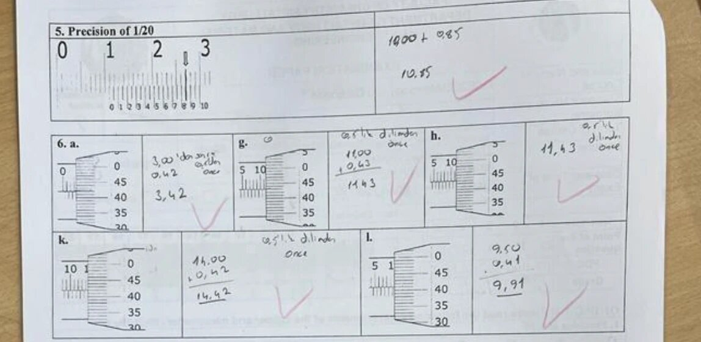
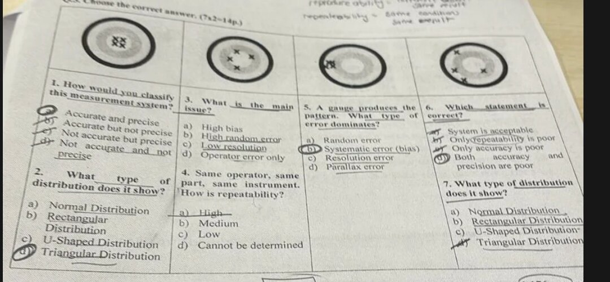

| Soru | Alet | Okuma | Cevap |
|---|---|---|---|
| 5 | Kumpas 1/20 | Verniyer 0'ı 10 mm'yi geçmiş → 10 · hizalı verniyer çizgisi 17. → 17 × 0.05 = 0.85 | 10.85 mm ✓ |
| 6a | Mikrometre | Kovan (sleeve) 3.00 · tambur (thimble) çizgisi 42 × 0.01 = 0.42 | 3.42 mm ✓ |
| 6g | Mikrometre | Kovan 11.00 (10'dan sonra 1 çizgi) · tambur 43 → 0.43 | 11.43 mm ✓ |
| 6h | Mikrometre | Kovan 11.00 · tambur 43 → 0.43 | 11.43 mm ✓ |
| 6k | Mikrometre | Kovan 14.00 · tambur 42 → 0.42 | 14.42 mm ✓ |
| 6l | Mikrometre | Kovan 9.50 (alt tarafta yarım mm çizgisi görünüyor) · tambur 41 → 0.41 | 9.91 mm ✓ |
| 1 | A part is to be made to the length specification 14.7 + 0.2 mm. What is the largest acceptable size? Üst sınır = 14.7 + 0.2 → b) 14.9 mm |
| 2 | What is the point of having units in the sciences? b) They distinguish our numbers as measurements instead of pure numbers. (Kağıtta d işaretli; d metrik/emperyal ile ilgili, yanlış.) |
| 3 | Specification 17.8 + 0.4 mm. The constructed part is 18.3 mm. Is it acceptable? Üst sınır 18.2 < 18.3 → a) No |
| 4 | Which of the following represents an SI unit of luminous intensity? b) Candela (kağıtta "None of them" işaretli → ✗). Lumen ışık akısı, diyoptri mercek gücü. |
| 5 | What do we call an SI unit that is created by combining base units using algebra? a) a derived unit (kağıtta "basic unit" işaretli → ✗) |
| 6–8 | görünmüyor |
| 9 | The term used to specify the closeness of two or more measurements? a) Precision |
| 10 | When is triangular distribution used in a Type-B method? d) When most values are near the centre of distribution |
| 11 | Closeness of measured value to true value is ___ a) Accuracy |
| 12 | The mean length of an object is 5 cm. Which measurement is most accurate? Farklar: 4.9 → 0.1 · 4.805 → 0.195 · 5.25 → 0.25 · 5.4 → 0.4 → a) 4.9 cm |
| 13 | Statement 1: Most of the systematic uncertainty is Type-A. Statement 2: Type-A uncertainties vary each and every time a measurement is made. S1 yanlış (Type A random etkileri, istatistikle değerlendirir) · S2 doğru → b) F, T (kağıtta T, F işaretli → ✗) |
| 14–15 | görünmüyor |

Hedefler soldan sağa: ① merkezde sıkı grup · ② merkezin etrafına dağılmış · ③ merkez dışında sıkı grup · ④ hem dağınık hem merkez dışı
| 1 | Hedef ①: How would you classify this measurement system? → a) Accurate and precise |
| 2 | Hedef ①: What type of distribution does it show? → değerler merkezde toplanmış → d) Triangular distribution (Kağıt 1, soru 10 ile aynı mantık: "most values near the centre" = triangular) |
| 3 | Hedef ②: What is the main issue? → ortalama merkezde ama dağınık → b) High random error |
| 4 | Hedef ②: Same operator, same part, same instrument. How is repeatability? → aynı koşullarda sonuçlar dağınık → c) Low |
| 5 | Hedef ③: A gauge produces the pattern. What type of error dominates? → sıkı grup ama hep aynı yöne kaymış → b) Systematic error (bias) |
| 6 | Hedef ④: Which statement is correct? → d) Both accuracy and precision are poor |
| 7 | Hedef ④: What type of distribution does it show? → değerler belirli bir merkezde toplanmadan eşit olasılıkla yayılmış → b) Rectangular distribution |
Kağıdın üstündeki el yazısı not: reproducibility = different people, same result · repeatability = same conditions, same result.
A machine produces electrical components. 99.7% of the components have lengths between 1.176 cm and 1.224 cm. Assuming this data is normally distributed, what are the a) mean, b) standard deviation, and c) draw the normal distribution graph?
| 8 | The most common type of force ___, and one which is a clear example of an elastic element device, is the strain gauge load cell. The working principle is based on the mechanical deformation of an elastic element and its conversion into an electrical signal by bonded strain gauges. → transducer (force transducer / load cell) |
| 9 | Industrial ___ operate based on the interaction between water vapor in the air and a sensing element… → humidity sensors (hygrometers) |
| 10 | An ___ is a modified form of the U-tube manometer designed to improve measurement sensitivity. One arm is inclined at a small angle relative to the horizontal plane… → inclined manometer |
| 1 | Sine bar is a tool used for accurate setting out of angles by arranging to convert angular measurements to linear ones. → T |
| 2 | A clinometer is an instrument used for measuring angles relative to the horizontal plane. → T |
| 3 | A manometer is a static type of mechanical pressure measurement. → T |
| 4 | To measure the temperature in the range of −300 to 1500 °C with high accuracy, a th… is … (cümle kesik) → kağıtta F işaretli |
| 5 | Tolerance is the management of errors in manufactured machine parts. → T |
| 6 | The difference between 60 and 50 degrees is a measurable 10 degrees, is int[erval data]. → T (PDF 4–5, slayt 11) |
| 7 | Repeated data is the value that occurs when sorted by size defines the me[dian]. → T (PDF 3, slayt 48: median tanımı) |
| 8 | In 40 H7/d9, the numbers 7 and 9 indicate tolerance grade. → T (harfler H, d = tolerans konumu; rakamlar = tolerans derecesi) |
| 9–10 | kesik: "…liper has jaws on both sides and knife-edge fac…" ve "…nishes are called…" |
Malzeme karakterizasyon yöntemleri; izlencede "Other physical measurements" haftası. 1–2 ve 8–10 görünmüyor.
| ? | ___ is a technique used for the topographical study of the material's surface which works on the principle of light instead of the physical probe in determining the data. → Optical profilometry (optical profilometer) |
| ? | ___ is an analytical technique that measures the number of discrete wavelengths of visible light absorbed by or transmitted through a sample compared to a reference or blank sample. → UV-Vis spectroscopy (spectrophotometry) |
| 3 | ___ is a technique used in materials science to determine the crystallographic structure of a material by irradiating it with incident X-rays and measuring the intensities and scattering angles. → X-ray diffraction (XRD) |
| 4 | ___ is a thermo analytical technique in which the difference in the amount of heat required to increase the temperature of a sample and reference is measured as a function of temperature. → Differential scanning calorimetry (DSC) |
| 5 | A spectrometer is an optical instrument used to measure properties of light over a specific portion of the electromagnetic spectrum; 5 microns to 20 microns is known as ___ → infrared (IR) bölgesi (orta IR; FTIR) |
| 6 | A ___ is a scientific instrument that uses a focused beam of electrons… the detailed surface characteristics and three-dimensional structure of a specimen… → Scanning electron microscope (SEM) |
| 7 | ___ is an advanced scanning probe technique that provides high[-resolution] three-dimensional surface measurements by detecting interaction forces between a sharp probe [and the surface]. → Atomic force microscopy (AFM) |